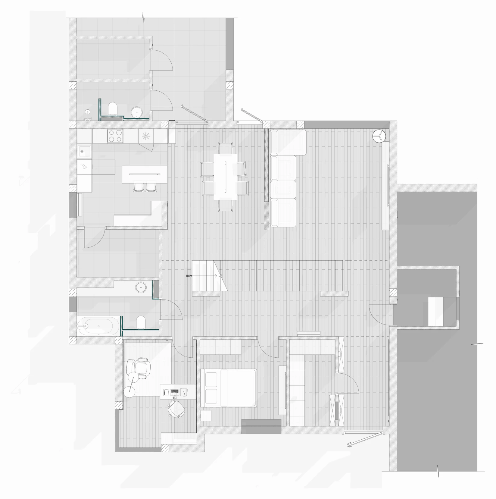

Частный жилой дом
- Тип Частный жилой дом
- Площадь 350 м²
- Локация Ростов-на-Дону
- Статус В реализации
Камерный интерьер с плотной графичной палитрой: темное дерево, серый камень, скрытый свет и отдельные контрастные акценты. Пространство держится на крупных спокойных плоскостях, поэтому темная гамма не перегружает комнаты. Акценты появляются дозированно через камень, локальную подсветку и предметные детали.
